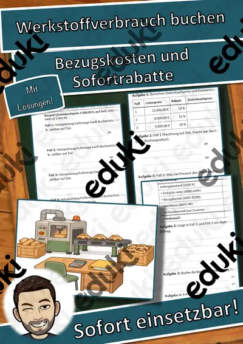
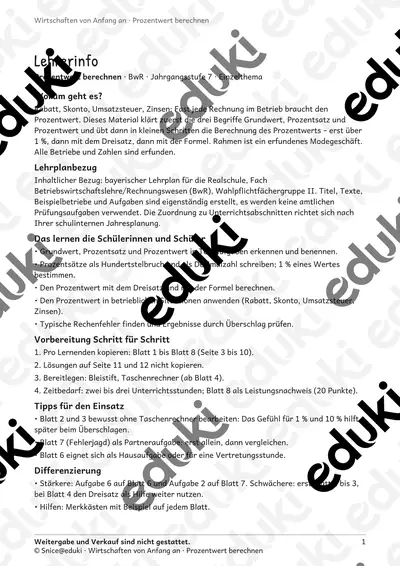

Angebotsvergleich und Sofortrabatt – Arbeitsheft mit Lösungen (BwR 7, Realschule Bayern)
Bevor ein Fertigungsbetrieb Werkstoffe bestellt, holt er Angebote ein und vergleicht sie. Dieses Heft begleitet das Rucksackwerk Bergfalke e. K. beim Einkauf: Die Lernenden unterscheiden die vier Werkstoffarten, lesen ein Angebot, berechnen Sofortrabatte und vergleichen Angebote rechnerisch bis zum Einstandspreis. Danach beziehen sie Lieferzeit, Qualität und Umwelt in die Entscheidung ein, prüfen Eingangsrechnungen mit Rabatt und buchen den Einkauf.
Für das Fach Betriebswirtschaftslehre/Rechnungswesen (BwR), Jahrgangsstufe 7, an der Realschule in Bayern.
Enthalten (16 Seiten): Lehrerinfo mit Einsatzhinweisen · 9 Arbeitsblätter, u. a. Vier Arten von Werkstoffen; Ein Angebot lesen; Den Sofortrabatt berechnen; Zwei Angebote vergleichen; Drei Angebote – und die Menge entscheidet; Nicht nur der Preis zählt; Die Rechnung mit Sofortrabatt prüfen · Lernzielkontrolle · Lösungen zu allen Blättern.
Einsatz: Übung und Vertiefung im Unterricht, als Hausaufgabe, zur Wiederholung oder in Vertretungsstunden. Zum Ausdrucken und Kopieren. Alle Namen, Betriebe und Beträge in den Aufgaben sind erfunden.
Texte KI-gestützt und vom Autor geprüft.
Ähnliche Materialien

Rabatt und Bonus buchen: Einkauf und Verkauf – Arbeitsheft mit Lösungen (BwR 8, Realschule Bayern)

Verkauf mit Sofortrabatt buchen – Arbeitsheft mit Lösungen (BwR 8, Realschule Bayern)

Werkstoffe buchen – Arbeitsheft mit Lösungen (BwR 8, Realschule Bayern)

Einkauf buchen mit Vorsteuer – Arbeitsheft mit Lösungen (BwR 7, Realschule Bayern)

Werkstoffverbrauch buchen – Arbeitsheft mit Lösungen (BwR 8, Realschule Bayern)

Rohstoffe einkaufen: Bezugskosten und Rabatt – Arbeitsheft mit Lösungen (BwR 8, Realschule Bayern)

Verkaufspreis: kalkulieren und buchen – Arbeitsheft mit Lösungen (BwR 8, Realschule Bayern)
